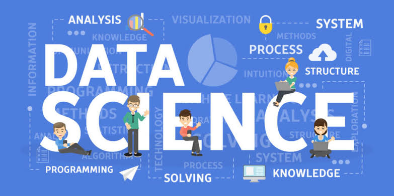

I wish to pursue a career in Data Science as I beleive Data Science is that field which has the power of solving various problems of our country. What we have currently is a lot of data from across the nation , what we need is skilled Data Engineers to efficiently process it.

I am also interested in literature a lot. I wish to read each and every composition of great writers like William Shakespeare and Jane Austen line by line.
Apart from all this the thing I am most interested in knowing how things work. Be it a phone or a guitar , I am always inquisitive about its working principle. Rather than only hitting "COMPILE AND RUN", I am more interested in knowing how the computer actually works and what it does.